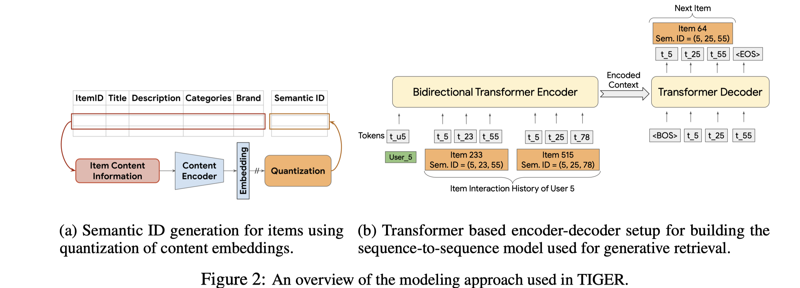
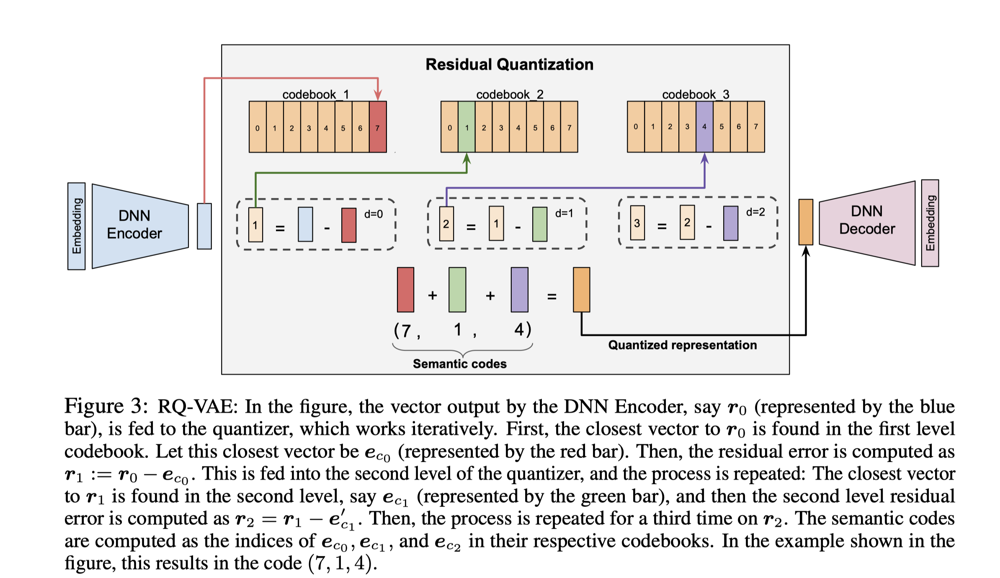
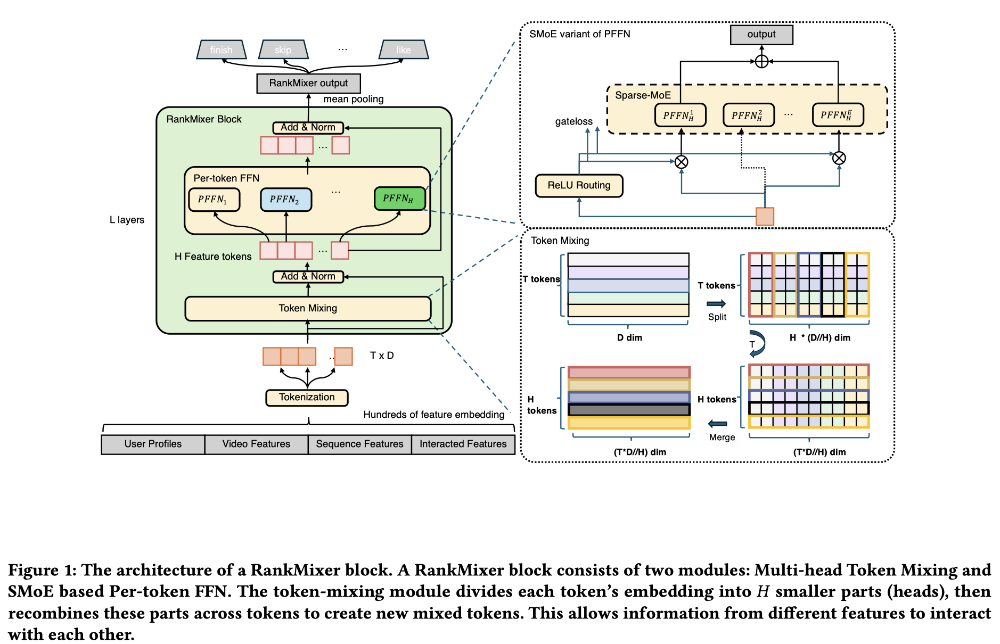
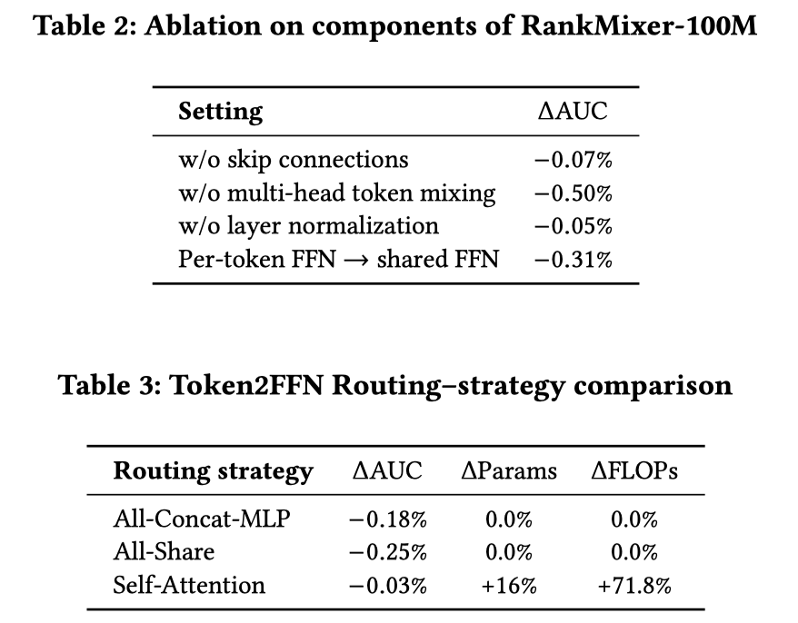

This post is aimed to record some scaling up papers for large-scale industrial recommenders. ^-^
TIGER
论文链接：arxiv
参考链接：zhihu

模型主体
语义生成：拿到item的标题、文本等信息，通过T5模型拿到embedding，作为生成semantic id的input，通过通过RQVAE拿到semantic id，为了出现codebook崩溃(大多数的item映射到少数的sid上)，采用kmeans进行初始化；

生成式推荐：对用户的历史item序列，转化为sid序列，预测下一个item所属的sid。
RankMixer
论文链接：arxiv
模型主体

整体框架：输入$e_{input}$被切分为$T$个token：${x_1,x_2,..,x_T}$，堆叠L层的rankmixer blocks(=tokenmixing+pertoken-ffn)，如下：
$$
S_{n-1}=LayerNorm(TokenMixing(X_{n-1})+X_{n-1}), \
X_n=LN(PertokenFFN(S_{n-1}) + S_{n-1})
$$Feature Tokenization
目的：(1) 减少小矩阵乘法，高效利用现代GPU；(2) 让重要特征建模充分，且不让重要特征占据主导，避免掩盖其他特征的表达。
做法：
- 输入$e_{input}=[e_1,e_2,…,e_N]$，其中$e_{N}$表示第N个语义一致的特征集合的concat emb，将输入$e_{input}$切换为若干个固定维度的tokens：
$$
x_i=Proj(e_{input}[d*(i-1):d*i]),i=1,…,T
$$
其中，d为固定的维度。
- 输入$e_{input}=[e_1,e_2,…,e_N]$，其中$e_{N}$表示第N个语义一致的特征集合的concat emb，将输入$e_{input}$切换为若干个固定维度的tokens：
Muit-head Token Mixing
目的：促进不同token之间的信息交互与利用。
做法：
Step1：每个token被切分为H个head，如下：
$$
[x_t^{(1)},x_t^{(2)},…,x_t^{(H)}] = SplitHead(x_t)
$$Step2：第h个 head对应的token $s^h$，如下：
$$
s^h =Concat([x_1^h,x_2^h,…,x_T^h])
$$
在论文中，H=T，为了后续做residual connection。Step3：残差连接，如下：
$$
s_1,s_2,…,s_H=LayerNorm(TokenMixing(x_1,x_2,…,x_T)+(x_1,x_2,…,x_T))
$$
Per-token FFN
目的：不让高频特征掩盖低频特征，从而提升整体AUC。
做法：
对于每一个token $s_t$，有：
$$
v_t = f_{pffn}^{t,2}(Gelu(f_{pffn}^{t,1}(s_t))), \
f_{pffn}^{t,i}(x) = xW_{pffn}^{t,i} + b_{pffn}^{t,i}
$$那么对于所有的token，有：
$$
v_1,v_2,…,v_T=PFFN(s_1,s_2,…,s_T)
$$
SparseMoe
目的： 使用sparsemoe替换PFFN，能进一步提升模型容量。但是传统SparseMoe有两个问题：**(1) 统一的topk专家routing机制：会平等地对待所有的token，但是信息量高的token需要更多的计算资源，这样做会阻碍模型捕捉不同token之间的差异；(2) 专家训练不充分**：per-token FFN已经引入大量参数，如果再引入不共享的专家网络，会让参数进一步爆炸，进而使得routing imbalance，让部分专家训练不充分。
做法：
ReLU Routing。采用relu门控机制+L1正则来替换掉topk+softmax的做法。对于token $s_i$，expert $e_{i,j}()$，router $h()$，如下：
$$
G_{i,j}=RELU(h(s_i)), \
v_i = \sum_{j=1}^{N_e}G_{i,j}e_{i,j}(s_i)
$$其中，$N_e$ 是每个token的专家网络数量，$N_t$ 是token数量。$\lambda$ 来控制激活专家的比例。如下：
$$
L = L_{task} + \lambda * L_{reg}, \
L_{reg} = \sum_{i=1}^{N_t}\sum_{j=1}^{N_e}G_{i,j}
$$Dense-training / Sparse-inference。两个router：$h_{train},h_{infer}$，$L_{reg}$仅仅在infer的时候用到；训练时，$h_{train},h_{infer}$都会被更新，从而防止专家训练不充分问题。实验里，$\lambda = 1/8$与$\lambda = 1$的AUC差别不大，但是推理时的开销大幅减少。
消融实验
蛮有意思。

背景知识：
- 稀疏激活：每个token只需要激活少量moe
- 负载均衡：通过路由机制分配tokens到不同专家
- 加权组合：不同专家贡献按权重组合
- 并行计算：按专家维度并行处理，提高效率
参考链接：sparsemoe
代码实现：
1
2
3
4
5
6
7
8
9
10
11
12
13
14
15
16
17
18
19
20
21
22
23
24
25
26
27
28
29
30
31
32
33
34
35
36
37
38
39
40
41
42
43
44
45
46
47
48
49
50
51
52
53
54
55
56
57
58
59
60
61
62
63
64
65
66
67
68
69
70
71
72
73
74
75
76
77
78
79
80
81
82
83
84
85
86
87
88
89
90
91
92
93
94
95
96
97
98
99
100
101
102
103
104
105
106
import torch
import torch.nn.functional as F
import torch.nn as nn
class Expert(nn.Module):
def __init__(self,feature_in_dim,feature_out_dim):
super(Expert, self).__init__()
self.mlp_layer = nn.Linear(feature_in_dim,feature_out_dim)
def forward(self,x):
out = self.mlp_layer(x)
return out
class Moe(nn.Module):
def __init__(self,feature_in_dim, feature_out_dim, expert_num):
super(Moe, self).__init__()
self.expert_list = nn.ModuleList(
Expert(feature_in_dim, feature_out_dim) for _ in range(expert_num)
)
self.gate_layer = nn.Linear(feature_in_dim,expert_num)
def forward(self,x):
expert_weight = self.gate_layer(x).unsequeeze(dim=1) # [bsz, 1, expert_num]
expert_outputs = [expert(x).unsqueeze(dim=1) for expert in self.expert_list]
expert_concat = torch.cat(expert_outputs, dim=1) # [bsz,expert_num,out_dim]
moe_out = torch.matmul(expert_weight,expert_concat) # [bsz,1,out_dim]
return moe_out.squeeze(dim=1)
class Router(nn.Module):
def __init__(self, expert_hidden_dim, expert_num, top_k):
super(Router, self).__init__()
self.gate_layer = nn.Linear(expert_hidden_dim,expert_num)
self.expert_hidden_dim = expert_hidden_dim
self.expert_num = expert_num
self.top_k = top_k
def forward(self,x): # x: [bsz*token_len, expert_hidden_dim]
router_logits = self.gate_layer(x) # [bsz*token_len, expert_num]
router_weights = F.softmax(router_logits,dim=-1)
router_weights, selected_experts = torch.topk(router_weights,int(self.top_k),dim=1)
router_weights = router_weights / router_logits.sum(dim=-1,keepdim=True)
router_weights = router_weights.to(x.dtype)
expert_masks = F.one_hot(selected_experts, num_classes=int(self.expert_num))
expert_masks = expert_masks.permute(2,1,0) # [expert_num,top_k,bsz*token_len]
return router_logits, router_weights, selected_experts, expert_masks
class SparseMoe(nn.Module):
def __init__(self,expert_hidden_dim, expert_num, top_k):
super(SparseMoe, self).__init__()
self.expert_hidden_dim = expert_hidden_dim
self.expert_num = expert_num
self.top_k = top_k
self.experts = nn.ModuleList(
Expert(expert_hidden_dim, expert_hidden_dim) for _ in range(expert_num)
)
self.router = Router(expert_hidden_dim, expert_num, top_k)
def forward(self,x):
batch_size,token_len,hidden_dim = x.size()
x = x.view(-1,hidden_dim)
router_logits, router_weights, selected_experts, expert_masks = self.router(x)
final_hidden_states = torch.zeros(batch_size*token_len,hidden_dim,dtype=x.dtype, device=x.device)
for expert_idx in range(self.expert_num):
expert_layer = self.experts[expert_idx]
idx, top_idx = torch.where(expert_masks[expert_idx])
'''
idx：对于此token是当前expert_idx专家的top1还是top2，0、1取值
top_idx: 此token在bsz*token_len的索引取值
'''
cur_expert_input = x.unsqueeze(dim=0)[:,top_idx,:].reshape(-1,hidden_dim)
cur_hidden_state = expert_layer(cur_expert_input)
cur_gate_out = torch.multiply(router_weights[top_idx,idx].unsqueeze(dim=-1),cur_hidden_state)
final_hidden_states.index_add_(0,top_idx,cur_gate_out)
final_hidden_states = final_hidden_states.reshape(batch_size,token_len,hidden_dim)
return final_hidden_states, router_logits
def test_token_level_moe():
x = torch.rand(2, 4, 16)
token_level_moe = SparseMoe(16,2,2)
out = token_level_moe(x)
print(out[0].shape, out[1].shape)
if __name__ == '__main__':
test_token_level_moe()
TokenMixer-Large
- 论文链接：arxiv
- 模型主体